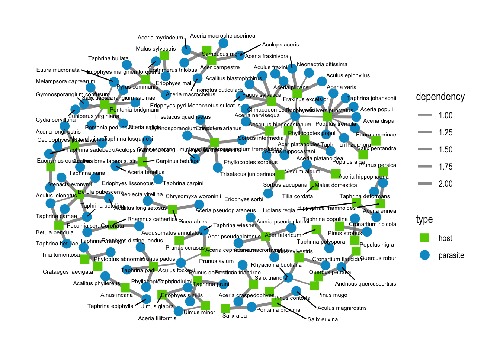
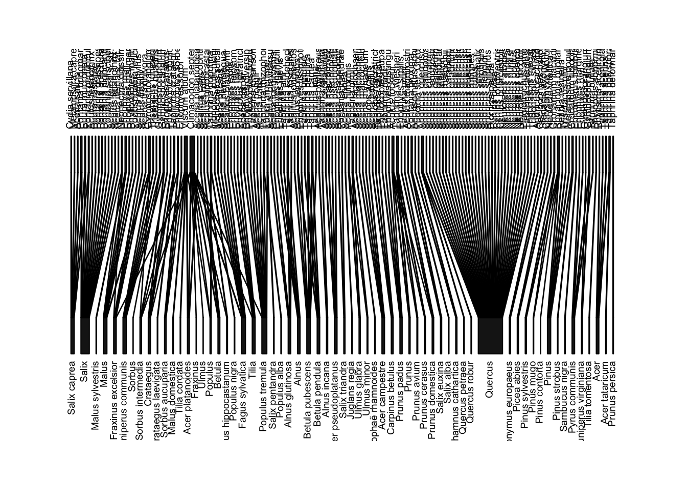
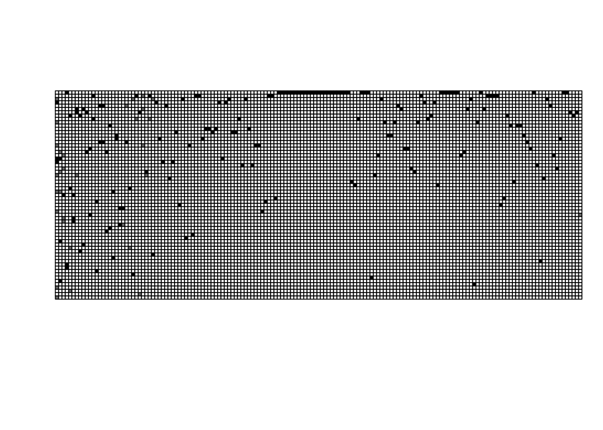

library(tidyverse)
library(bipartite)
library(tidygraph)
library(ggraph)SBDI_tree_nets
Read data and count entries by interaction type
raw_data <- read.table("data/report_data.txt", sep = "\t", header = T, fileEncoding = "ISO-8859-1")
# check for duplicates
nrow(raw_data) > n_distinct(raw_data[,c("Scientificname", "VärdSciName", "Nyttjande")])[1] TRUEThere are duplicates in the data (seems to be for different parts of the tree). Remove them from data subsets later.
# number of tree host species
n_distinct(raw_data$VärdCommon)[1] 2339# number of attackers
n_distinct(raw_data$Commonname)[1] 8731# taxonomic data from the report's appendix 2
tree_taxo <- read.csv("data/tree_taxonomy.csv")
# number of trees
n_distinct(tree_taxo$Scientific.name)[1] 118data_trees <- filter(raw_data, VärdSciName %in% tree_taxo$Scientific.name)
# number of attackers by type of interaction
table(data_trees$Nyttjande) %>% sort()
Parasitism Mykorrhiza Underlag/fastsittande
258 2035 3296
NULL Föda Växtplats
3635 4104 4159
Livsrum
5600 ##Parasites
data_parasitism <- filter(data_trees, Nyttjande == "Parasitism") %>%
select("Scientificname", "VärdSciName", "tal1") %>%
rename("parasite" = "Scientificname",
"host" = "VärdSciName",
"weight" = "tal1")
n_distinct(data_parasitism$parasite)[1] 159n_distinct(data_parasitism$host)[1] 63nrow(data_parasitism)[1] 258n_distinct(data_parasitism)[1] 212data_parasitism %>%
group_by(parasite, host, weight) %>%
summarise(n = n()) %>%
filter(n > 1) %>%
nrow()[1] 44data_parasitism %>%
group_by(parasite, host) %>%
summarise(n = n()) %>%
filter(n > 1) %>%
nrow()[1] 44raw_data %>%
filter(Scientificname == "Biorhiza pallida") idnr taxon Commonname Scientificname Family OrganismGroup faktor
1 3293919 252312 NULL Biorhiza pallida Cynipidae Steklar 1173
2 3809741 252312 NULL Biorhiza pallida Cynipidae Steklar 1165
3 3809740 252312 NULL Biorhiza pallida Cynipidae Steklar 1142
4 4269039 252312 NULL Biorhiza pallida Cynipidae Steklar 1183
blankettnamn tal1 Nyttjande host VärdSciName VärdCommon
1 Knoppar 2 Parasitism 1006232 Quercus ekar
2 Ved och bark 2 Parasitism 1006232 Quercus ekar
3 Växtdelar, ej ved 2 Parasitism 1006232 Quercus ekar
4 Trädrötter, vedartade 2 Parasitism 1006232 Quercus ekarraw_data %>%
filter(Scientificname == "Andricus quercuscorticis") idnr taxon Commonname Scientificname Family OrganismGroup
1 4269656 252295 NULL Andricus quercuscorticis Cynipidae Steklar
2 4269658 252295 NULL Andricus quercuscorticis Cynipidae Steklar
3 4269657 252295 NULL Andricus quercuscorticis Cynipidae Steklar
4 4269655 252295 NULL Andricus quercuscorticis Cynipidae Steklar
5 4269654 252295 NULL Andricus quercuscorticis Cynipidae Steklar
6 4269652 252295 NULL Andricus quercuscorticis Cynipidae Steklar
faktor blankettnamn tal1 Nyttjande host VärdSciName VärdCommon
1 1176 Grenar 2 Parasitism 221405 Quercus petraea bergek
2 1173 Knoppar 2 Parasitism 221405 Quercus petraea bergek
3 1173 Knoppar 2 Parasitism 221406 Quercus robur skogsek
4 1176 Grenar 2 Parasitism 221406 Quercus robur skogsek
5 1173 Knoppar 2 Parasitism 1006232 Quercus ekar
6 1176 Grenar 2 Parasitism 1006232 Quercus ekardata_parasitism <- unique(data_parasitism)
duplicates <- data_parasitism %>%
group_by(parasite, host) %>%
summarise(n = n()) %>%
filter(n > 1)
# this interaction is recorded as both 1 and 2
raw_data %>%
filter(Scientificname == "Gymnosporangium clavariiforme") idnr taxon Commonname Scientificname Family
1 4243642 267000 hagtornsrost Gymnosporangium clavariiforme Pucciniaceae
2 4243627 267000 hagtornsrost Gymnosporangium clavariiforme Pucciniaceae
3 4243639 267000 hagtornsrost Gymnosporangium clavariiforme Pucciniaceae
4 4243643 267000 hagtornsrost Gymnosporangium clavariiforme Pucciniaceae
OrganismGroup faktor blankettnamn tal1 Nyttjande host VärdSciName
1 NULL 1146 Frukt 1 Parasitism 1005953 Crataegus
2 NULL 1177 Stam 2 Parasitism 222146 Juniperus communis
3 NULL 1176 Grenar 2 Parasitism 1005953 Crataegus
4 NULL 1150 Blad/barr 2 Parasitism 1005953 Crataegus
VärdCommon
1 hagtornar
2 en
3 hagtornar
4 hagtornardata_parasitism <- data_parasitism[-which(data_parasitism$parasite == duplicates$parasite &
data_parasitism$host == duplicates$host &
data_parasitism$weight == 1),]Plot network
# with ggraph
nodes_para <- data.frame(name = c(unique(data_parasitism$parasite), unique(data_parasitism$host)),
type = c(rep("parasite",n_distinct(data_parasitism$parasite)),
rep("host",n_distinct(data_parasitism$host))))
parasit_graph <- tbl_graph(nodes = nodes_para, edges = data_parasitism)
ggraph(parasit_graph, layout = "kk") +
geom_edge_link(aes(edge_width = weight), color = "grey30", alpha = 0.8) +
geom_node_point(aes(shape = type, color = type), size = 3) +
scale_color_manual(values = c("chartreuse3","deepskyblue3")) +
scale_edge_width(range = c(0.7,1.4))
# with bipartite
adjm_parasitism <- frame2webs(mutate(data_parasitism, webID = 1), varnames = c("host","parasite", "webID", "weight"))[[1]]
plotweb(adjm_parasitism, text.rot = 90, y.lim = c(0, 2))
mod_para <- computeModules(adjm_parasitism)
plotModuleWeb(mod_para)